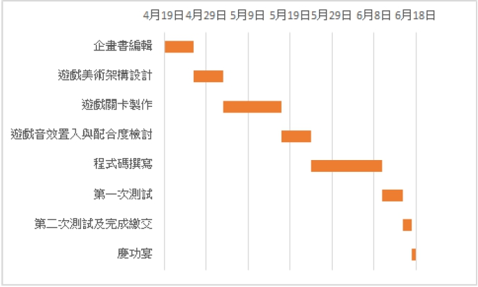

迷宮遊戲、懸疑、劇情
迷宮遊戲、懸疑、劇情
因為曾經玩過一款類似迷宮的遊戲，那款遊戲的地圖會時而消失，時而出現，要憑著自己的記憶，控制角色走在步道上，若偏離步道則要重頭開始，那時覺得這個遊戲非常有趣。現在有機會能自己做一個遊戲，希望能再加入我們自己的一些創意及劇情，做出一個更有變化、更有故事性的遊戲，讓更多人能玩到。
傳說，每到夜深人靜的時刻，學校演藝廳總會傳出陣陣旋律，凡是聽到這個旋律的人都會消失。一天晚上，男主角獨自經過演藝廳，從此，再也沒有人看過他…在遊戲《人間迷走》中，玩家需控制故事中的人物角色，探索這神秘的校園。每個關卡皆有不同的任務，究竟女主角能通過層層關卡，成功找到消失的男主角嗎？
徐…呼呼…，半夜的校園疾風伴隨著夜鷺的開趴聲，響徹空蕩的中央走道，傳說，在這個時刻九館的地下室演藝廳就會傳出低音提琴與的吟唱聲，曾經有不少喝醉的學生經過那裏就消失了，這裡也成為烤雞大學的夜間禁地。
阿康今天剛失戀，一個人像被抽了靈魂般，一邊喝高粱一邊搖搖晃晃的走回宿舍，此時迷霧四起，整條中央走道伸手不見五指，(這邊設第一關好了，關卡叫迷霧裡走迷宮)，由於酒醉加上濃霧，阿康只能一邊撞牆一邊找路。經過一番遊走，阿康終於走出迷霧陣，他走到九館裡的空教室開始呼呼大睡，不知道什麼時候，四周想起歌劇[魔笛]的樂器聲，阿康被這魔性的吸引開始朝聲音發出的地方前進，一路走著…走者,從一樓走到B1實驗室，再走到B2演藝廳。
當阿康到演藝廳時，忽然想起低音提琴傳說，精神都回來了。
阿康: 阿我怎會在這，我不是要回宿舍嗎，哀一定是喝太醉的關係，這裡太陰森了趕快回去吧。
但已經來不及了，演藝廳的門慢慢打開，一股強大的吸力把阿康吸進去。
阿… 阿…阿康尖叫著
幾秒後，外面的走廊已經沒有了任何人影了。
由於阿康連續多人沒有出現在課堂上，加上他又是校董的兒子，班籍教授為了跟上頭交代於是找到他的前女友，希望
有阿康的下落，免的被董事會開除。
教授：小珊啊，你男朋友勒，叫他來上課啊，不能他不來又不能當他，我很難跟班上同學交代。
小珊：我們已經分手了，他現在在哪我怎麼會知道。
教授:我不管，三天之內，他每座在教室，我就把你當掉。
為了不被當掉，小珊開始尋找他的前男友,為了更快找到他，他找來易經老師來幫它算卦找人。
易經老師：我算了一掛，你要找的人在學校裡，但是正確的位置我也不清楚，應該是被困在某種空間中，我有一份古老的秘方可以讓你跟他產生連結，但我需要一些材料才能實現。
小珊 ：什麼秘方，我要怎麼做
易經老師:你需要清晨三點的時候，咬破手指將鮮血滴在燃燒的酒精中，接著咀嚼古柯葉，連結就會產生。
小珊:那我要去哪裡找這些東西呢？
易經老師：九館的地下實驗室有這些材料，自己去找吧。
經過一番努力，小珊終於找到所需的物品，開始進行找尋儀式，儀式進行時會有音樂帶領操作者找到要尋找的目標，音樂結束時，連結即跟著結束，如果尚未找到目標，則需重新操作儀式。
在音樂的引導下，小珊成功在演藝廳後面的房間找到阿康，順便知道了為啥走進來的人都出不去，因為這裡不知何時被改造成地下音樂酒吧，大家都在這喝喝酒跳舞，爽到不想出去。
[ 小姐，第一次來吼，想要喝點啥阿] 酒保熱情的喊者。
從最初的中央走道闖過三個關卡，到最終點實驗室。
遊戲一開始會進入最基礎(簡單)的關卡，玩家必須在限制的時間內通關，通關後即可前往下一關卡，但由於關卡中會有不同的因素，會增加通關難度，努力到達終點吧!
角色:小珊(主角1)、阿康(主角2)、教授(配角)、易經老師(配角)
操作功能:透過W(上)A(左)S(下)D(右)控制角色。
遊戲畫面:設有計時器、關卡、重新開始等遊戲介面。
遊戲關卡設計分為三個關卡，設有簡單、中等、困難等三種不同難度的關卡。玩家必須循序漸進地通過層層關卡，通往最終關卡。
遊戲背景設置在校園，玩家需通過層層關卡走出迷宮，完成最終任務。
關卡一
關卡二
角色
遊戲透過若隱若現的迷宮考驗玩家的記憶力以及盡量在越短時間內走出來，內容有點類似RPG遊戲簡單可愛的角色，讓玩家在遊玩時感到心靈被治癒。
角色設計透過組員過往玩過的電玩遊戲中為靈感做設計。
遊戲關卡設計分為三個關卡，設有簡單、中等、困難等三種不同難度的關卡。玩家必須循序漸進地通過層層關卡，通往最終關卡。

呂定豪｜規劃時間、遊戲內容
林璟騰｜遊戲架構、美術、影片製作
鄭旭文｜迷宮設計，遊戲內容
許芝榕｜遊戲介紹、遊戲角色設計